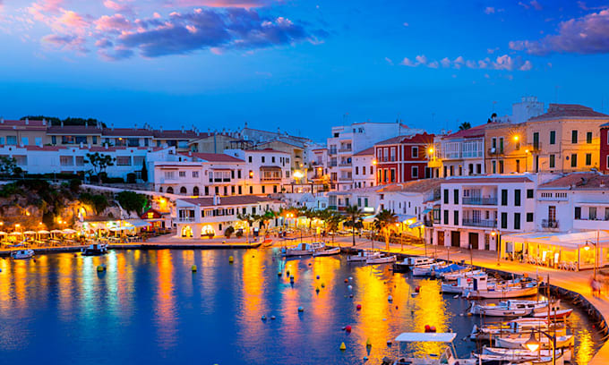

Destinos para Viajar con Amigos en Julio
Sanxenxo
Sanxenxo es un hermoso destino costero en la provincia de Pontevedra, Galicia. Se caracteriza por su esqusita comida, sus playas de aguas cristalinas y ocio nocturno. Es el lugar perfecto para unas vacaciones divertidas con amigos!
Puerto de Santa María
El Puerto de Santa María es una encantadora ciudad costera en la provincia de Cádiz, Andalucía. Es conocida por su fiesta en verano, con sus tremendos planes de tardeo... Un lugar animado, al cual le acompaña un muy buen tiempo. Si quieres ponerte moreno y salir de fiesta con tus amigos... a que esperas!
Jávea
Jávea, ubicada en la Costa Blanca de la Comunidad Valenciana. Es conocida por sus impresionantes playas, en las que podrás desconectar y salir de tu rutina! Además, es un sitio animado por la noches. Es un destino ideal para disfrutar del sol, la naturaleza y la buena compañía.

Menorca
Menorca, es una de las islas en las Islas Baleares. Es mundialmente conocida,por sus playas de aguas cristalinas, su paisaje y su rica cultura. Si el dinero no es un problema para vuestro grupo, es un destino perfecto para explorar con amigos y disfrutar de la belleza natural de la isla; asi como salir de fiesta.

Comillas
Comillas es un encantador pueblo costero en Cantabria, conocido por sus paisajes, sus playas, su buena gastronomía y su ambiente tranquilo. Es un destino ideal para relajarse y disfrutar de la belleza del norte de España.
A continuación le dejamos una tabla con una valoración de los posibles destinos:
Destinos Disponibles
| Destino |
Gastronomía |
Desconexión |
Fiesta |
Precio |
| Sanxenxo |
Excelente |
Buena |
Buena |
$$ |
| Puerto de Santa María |
Normal |
Baja |
Muy buena |
$$$ |
| Jávea |
Buena |
Buena |
Buena |
$$$ |
| Menorca |
Normal |
Muy buena |
Buena |
$$$$ |
| Comillas |
Muy buena |
Muy buena |
Normal |
$$ |